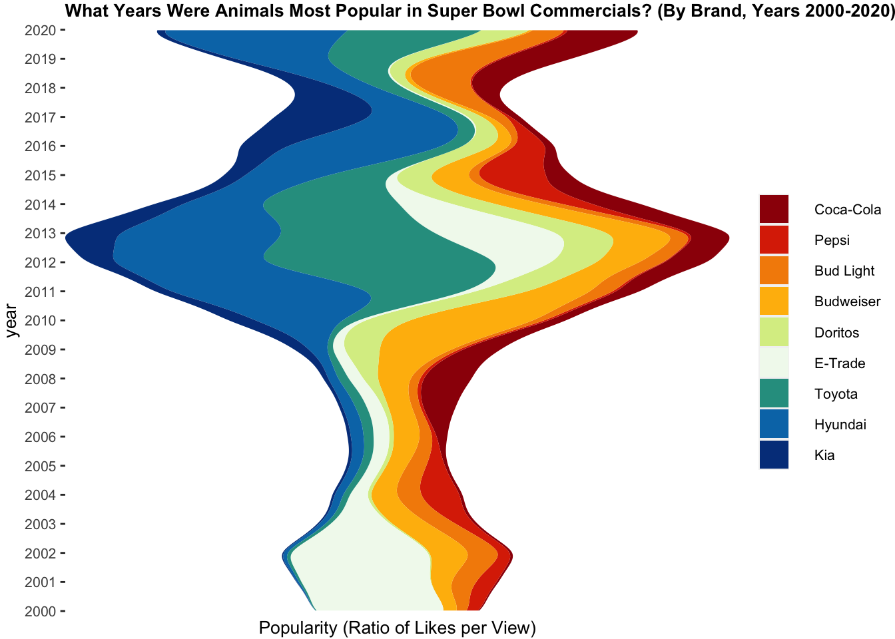

Tidy Tuesday Visualization
R Visualization
A recreation of a TidyTuesday from March, 2021
Code
ggplot(data = youtube, aes(year, rel_likes, fill = brand)) +
geom_stream(extra_span = 0.1,
true_range = "both") +
coord_flip()+
labs(title = "What Years Were Animals Most Popular in Super Bowl Commercials? (By Brand, Years 2000-2020)",
fill = "") +
ylab("Popularity (Ratio of Likes per View)")+
scale_y_continuous(expand = c(0, 0)) +
scale_x_continuous(limits = c(2000, 2020), expand = c(0, 0), breaks = seq(2000, 2020, 1)) +
scale_fill_manual(values = c("#9d0208", "#dc2f02", "#f48c06", "#ffba08", "#d9ed92", "#f1faee", "#2a9d8f", "#0077b6", "#023e8a", "#03045e")) +
theme(panel.grid.minor = element_blank(),
panel.grid.major.x = element_blank(),
panel.background = element_rect(fill = NA),
axis.title.x.bottom = element_text(size = 10),
axis.line.x = element_blank(),
axis.text.x = element_blank(),
axis.ticks.x = element_blank(),
strip.background = element_rect(fill = NA),
text = element_text(size = 10),
legend.spacing.x = unit(0.5, "cm"),
legend.spacing.y = unit(0.125, "cm"),
plot.caption = element_text(size = 6, lineheight = 0.3),
plot.title = element_text(face = "bold", size = 10),
plot.margin = margin(2, 2, 1, 2))
Adapted From: Andy Baker, fivethirtyeight